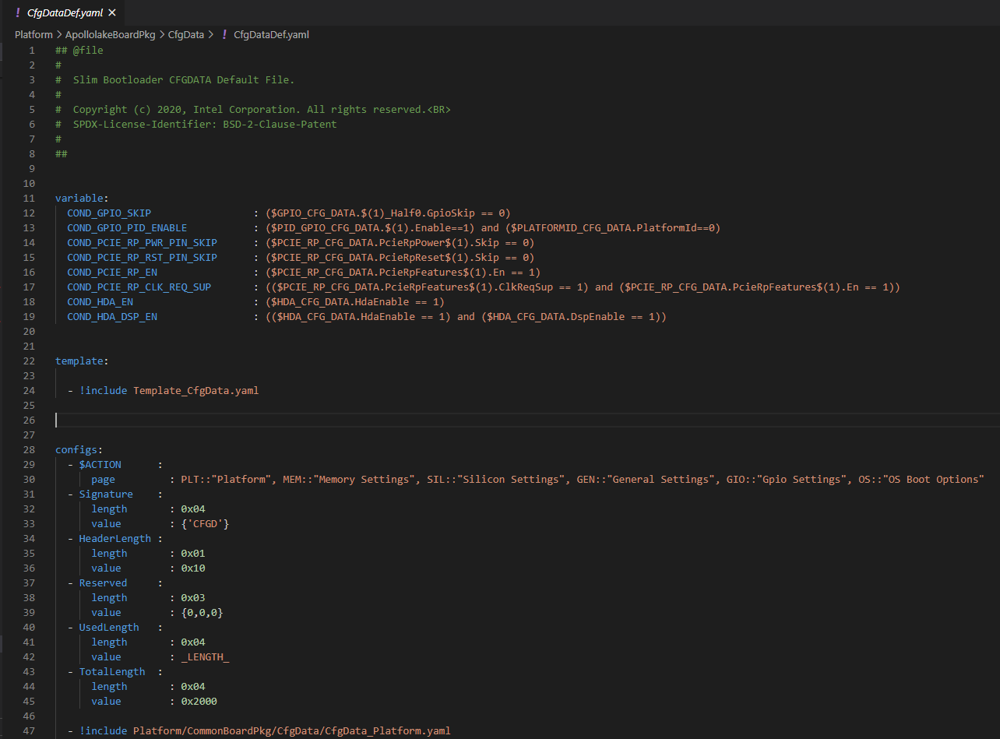
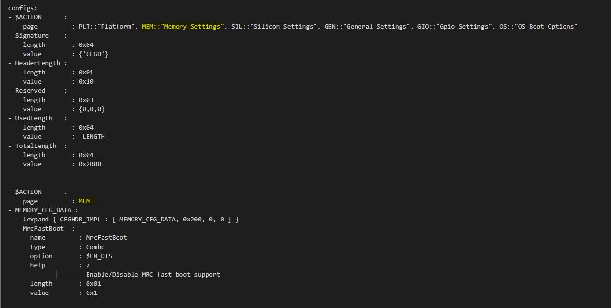

7. YAML Format Boot Configuration¶
7.1. Introduction¶
This document describes the format of the YAML based boot setting file used to specify features, settings, and tool display information to the Intel Firmware Support Package (FSP) and tools like Config Editor. It further describes the structure and content of YAML format files, which can simplify the configuration of a static binary and during dynamic boot process.
7.2. Target Audience¶
This document is intended for person creating and using firmware images. It is most likely of interest if a developer needs to create customized feature and expose binary settings for delivery to customers, or that a new SOC device is being enabled.
7.3. Configuration Description (YAML) Explained¶
The declarations required to build the configuration data blobs and the header files are provided in a configuration description file. This file uses the YAML syntax.
YAML (https://yaml.org/) is a data serialization language designed to be human-friendly and work well with modern programming languages. A quick syntax reference can be found here - https://yaml.org/refcard.html
Configuration YAML files will be processed by configuration tools like GenCfgData, CfgDataTool, CfgDataStitch in order to generate the configuration header files and binary blobs.
The main platform configuration file is specified in CfgDataDef.yaml. Please note that you may find many YAML files. However, only CfgDataDef.yaml is the primary file used for the platform configuration, and other sub YAML files will be included by the primary YAML file to provide component specific configuration.
An example configuration file in YAML syntax is provided in Figure 15 below.
{kind=link}
Figure 14
7.4. File Layout¶
The configuration YAML file has a basic organization as below
- Variable declarations
- Template declarations
- Configuration declarations
7.4.1. Meta-Data Markers¶
The configuration YAML files uses the $ sign as meta-data indicator. This is used by the SBL configuration parsing tools.
The current specification version supports the following meta-data markers.
7.4.1.1. $ACTION¶
$ACTION is a meta-data marker and is followed by a YAML mapping node that contains some meta-data. The following attributes are supported currently.
7.4.1.2. PAGE¶
PAGE is used to declare a list of pages used in the GUI.
PAGE is also used to define the display scope for a configuration parameter and can be applied for individual configuration parameters.
In this way multiple configuration parameters can be grouped to be visually displayed together in the same page in GUI.
Since the page: value(s) is a meta-data used by the tool (not a configuration option itself), it has be preceded by the $ACTION node.
Format:
page: PageId1:ParentPageId1:PageTxetDescription1, PageId2: ParentPageId2:PageTxetDescription2
If a root page needs to be defined, the ParentPageId could be empty as below:
page: RootPageId::RootPageTxetDescription
{kind=link}
Figure 15
7.4.1.3. $STRUCT¶
The STRUCT directive is used to indicate a nested structure within a configuration structure.
For example, consider the nested structure below:
typedef struct {
UINT32 Acpi : 1;
UINT32 MeasuredBoot : 1;
UINT32 Vt : 1;
UINT32 eMMCTuning : 1;
UINT32 DciDebug : 1;
UINT32 Rsvd1 : 27;
} FEATURES_DATA;
typedef struct {
FEATURES_DATA Features;
} FEATURES_CFG_DATA;
The following example shows this declaration using a $STRUCT as shown below

Figure 16
- $ACTION :
page : FEATURES:PLT:”Features”
- FEATURES_CFG_DATA :
- !expand { CFGHDR_TMPL : [ FEATURES_CFG_DATA, 0x310, 0, 0 ] }
- !expand { FEATURES_TMPL : [ 0x0000001F ] }
7.4.2. YAML Tags¶
YAML represents type information of native data structures with a simple identifier, called a tag. Explicit typing is denoted with a tag using the exclamation point (“!”) symbol. The following application-specific local tags are used.
7.4.2.1. !INCLUDE¶
Configuration declarations may be logically organized in multiple files. Additional YAML files are included in the CfgDataDef.yaml using “!include” tag.
!include statement may appear within any section. A relative file path is required to specific the file path to be included. This path should be relative to the current YAML file containing the !include statement. The file content to be included must match the content type of the current section definition, contain complete sections, or combination of both.
Statements in !include files must not break the integrity of the Yaml file, the included file is read by parsing tools in the exact position of the file, and is functionally equivalent to copying contents of the included file and pasting them into Yaml. The indentation of the included file will be adjusted automatically so that the top-level indentation in the included file has the same level as the !include statement line. line.
Format:
- !include RelativeFilePath
Example:
- !include Platform/CommonBrdPkg/CfgData/CfgData.yaml
- !include Platform/Rvp7Pkg/CfgData/CfgData_GPIO.yaml
7.4.2.2. !EXPAND¶
“!expand” tag is used for declaring a configuration option defined by a template (Template). !expand tag can only appear in template or configs section.
Format:
- !expand { CfgTmplName: [Param1, Param2, ….] }
Using the CFGHDR_TMPL template example:
CFGHDR_TMPL: >
- CfgHeader :
length : 0x04
value : {0x01:2b, ((_LENGTH_$(1)_)/4):10b, $(3):4b, $(4):4b, $(2):12b}
- CondValue :
length : 0x04
value : 0x00000000
- !expand { CFGHDR_TMPL : [ PLATFORMID_CFG_DATA, 0x0F0, 0, 0 ] }
Here, the template CFGHDR_TMPL will be expanded with its full template body. $(1), $(2), $(3) in template body will be replaced with the appropriate parameters where:
- $(1) is replaced with PLATFORMID_CFG_DATA,
- $(2) is replaced with 0x0F0,
- $(3) is replaced with 0,
- and $(4) is replaced with 0.
7.5. Variable¶
Variables may be considered as something equivalent to a C language macro. Variables are primarily used as symbolic names given to Python expressions. Whenever the variable name is used, it is replaced by the contents of the macro. Variables should only be defined in variable section.
Example:
variable:
COND_GPIO_SKIP : ($GPIO_CFG_DATA.$(1)_Half0.GpioSkip == 0)
7.6. Template¶
Templates are used to declare the format of configuration options and are useful when many configuration options of the similar type are needed. GPIO configuration option is a good example where templates are useful. A platform may have a lot of GPIO pins and instead of declaring configuration options for GPIO_1, GPIO_2, GPIO_3, etc., a template for GPIO can be declared and each GPIO can reuse the same configuration template with different values as needed.
Templates should be declared in template section only, and should always be represented as a mapping node using folded block style indicated by a right angle bracket (>).
Templates support reference to parameters to customize the expansion. $(n) can be used to refer to the Nth parameter passed into this template macro by !expland tag. During expansion, $(n) will be substituted with the actual Nth parameter.
For example, a template for PCIe root port configuration is shown below:
PCIERP_TMPL: >
- PcieRpFeatures$(1) :
- $STRUCT :
name : PCIE RP $(1) Config Data
struct : PCIE_RP_FEAT[]
length : 0x01
value : $(2)
- En :
name : PCIE RP Enable
type : Combo
option : $EN_DIS
help : >
ENABLE- Enable this PCIE RP. DISABLE- Disable this PCIE RP
order : 0000.0000
length : 1bB
- ClkReqSup :
name : PCIE RP Clk Req Support
type : Combo
option : $EN_DIS
help : >
Enable/Disable CLKREQ# Support
condition : $(COND_PCIE_RP_EN)
length : 1bB
- ClkReqNum :
name : PCIE RP Clk Req Number
type : EditNum, HEX, (0x00, 0xFF)
help : >
Configure Root Port CLKREQ Number if CLKREQ is supported
condition : $(COND_PCIE_RP_CLK_REQ_SUP)
length : 3bB
- Aspm :
name : PCIE RP Aspm
type : EditNum, HEX, (0x00, 0xFF)
help : >
PCI Express Active State Power Management settings
condition : $(COND_PCIE_RP_EN)
length : 3bB
Now, multiple PCIe root part configurations are declared using !expand (!EXPAND) as below:
- PCIE_RP_CFG_DATA :
- !expand { CFGHDR_TMPL : [ PCIE_RP_CFG_DATA, 0x302, 0, 0 ] }
- !expand { PCIERP_TMPL : [ 0 , 0x8B ] }
- !expand { PCIERP_TMPL : [ 1 , 0x8F ] }
- !expand { PCIERP_TMPL : [ 2 , 0x87 ] }
- !expand { PCIERP_TMPL : [ 3 , 0x86 ] }
- !expand { PCIERP_TMPL : [ 4 , 0x83 ] }
- !expand { PCIERP_TMPL : [ 5 , 0x8E ] }
7.7. Configs¶
This section contains the configuration option declarations.
A YAML node represents a single native data structure. A mapping node is an unordered set of key: value node pairs. Mappings use a colon and space (“: “) to mark each key: value pair.
A block sequence is simply a series of nodes, each denoted by a leading “-” indicator. The “-” indicator must be separated from the node by white space. YAML’s block collections use indentation for scope and begin each entry on its own line.
SBL configuration options are a series of YAML block sequence and form a YAML block collection.
Every ConfigDataDef.yaml configs section starts with the declaration for the CDATA_BLOB_HEADER as shown in Config BLOB Header followed by a series of configuration data identied by unique tags:
configs:
- $ACTION :
page : PageId1::”Page Display Text”, PageId2::”Page Display Text”, PageId3::”Page Display Text”, …
- Signature :
length : 0x04
value : {‘CFGD’}
- HeaderLength :
length : 0x01
value : 0x10
- Reserved :
length : 0x03
value : {0,0,0}
- UsedLength :
length : 0x04
value : _LENGTH_
- TotalLength :
length : 0x04
value : 0x2000
As discussed in SBL Configuration Tags, SBL configuration options are organized as groups.
- Each group is represented as a YAML block sequence and starts with a leading “-” indicator followed by a white space.
- Each group has a configuration header. The Configuration header is declared using “!expand” tag to expand a template declaration. The configuration header itself is a YAML block sequence
- Each configuration option within the group is also a block sequence made of mapping nodes, each with key:value pair.
The following example will illustrate how a MrcFastBoot config option is declared
- MrcFastBoot :
name : MrcFastBoot
type : Combo
option : $EN_DIS
help : >
Enable/Disable MRC fast boot support
length : 0x01
value : 0x1
The below shows the MrcFastBoot config option being under MEMORY_CFG_DATA.
- MEMORY_CFG_DATA :
- !expand { CFGHDR_TMPL : [ MEMORY_CFG_DATA, 0x200, 0, 0 ] }
- MrcFastBoot :
name : MrcFastBoot
type : Combo
option : $EN_DIS
help : >
Enable/Disable MRC fast boot support
length : 0x01
value : 0x1
Example showing the MrcFastBoot config option being under MEMORY_CFG_DATA which is displayed in a “MEM” page.
- $ACTION :
page : MEM
- MEMORY_CFG_DATA :
- !expand { CFGHDR_TMPL : [ MEMORY_CFG_DATA, 0x200, 0, 0 ] }
- MrcFastBoot :
name : MrcFastBoot
type : Combo
option : $EN_DIS
help : >
Enable/Disable MRC fast boot support
length : 0x01
value : 0x1
7.7.1. Configuration Option Nodes¶
The below sections explain each of the “keys” used in a configuration option.
7.7.1.1. NAME¶
NAME gives a plain-text label for a configuration parameter. This is the text label that is displayed in the Config Editor tool.
Format:
name: CfgItemName
Example:
name : MrcFastBoot
7.7.1.2. TYPE¶
TYPE defines the format of a configuration parameter that will be represented in the Config Editor tool. There are 5 different types available for configuration parameters: EditNum, EditText, Combo, Table, Reserved
7.7.1.2.1. EditNum¶
EditNum is used when user needs to input any value within the range defined. If the configuration option is an array, the VALUE field is used to specify the number of elements in the array.
Format:
type : EditNum, NumType, (MinValue, MaxValue)
NumType could be **HEX** (Hexa-Decimal format) or **DEC** (Decimal format)
The MinValue and MaxValue is the minimum and maximum value allowed.
7.7.1.2.2. EditText¶
EditText is used when user needs to input any text string.
Format:
type : EditText
7.7.1.2.3. Combo¶
Combo is used to select from a drop-down list along. This list will be provided by OPTION field.
Format:
type : Combo
option : val1:text1, val2:text2, val3:text3, …
Example:
type : Combo
option : 0:9600, 1:19200, 2:38400, 3:57600, 4:115200
7.7.1.2.4. Table¶
Table is used to define a tabular format. It needs to be used along with OPTION field to provide additional information for the table including column header string, cell width and cell format. Further, the VALUE field specifies the total number of elements in the table.
Format:
type : Table
option : ColumnHdr1:width:format, ColumnHdr2:width:format, ColumnHdr3:width:format, …
ColumnHdr’n’ sepcifier indicates the string to be displayed as the column header. width indicates the cell width in number of bytes format is the number format and should be HEX
Example:
type : Table
option : >
0:1:HEX, 1:1:HEX, 2:1:HEX, 3:1:HEX, 4:1:HEX, 5:1:HEX, 6:1:HEX, 7:1:HEX, 8:1:HEX, 9:1:HEX, A:1:HEX, B:1:HEX, C:1:HEX, D:1:HEX, E:1:HEX, F:1:HEX
Byte width in each cell of the table can be displayed as 1 byte, 2 bytes or 4 bytes.
7.7.1.2.5. Reserved¶
Reserved type can be used to prevent configuration parameters from being displayed in the Config Editor. But the configuration parameters will still be generated in the auto-generated C header structure.
Format:
type : Reserved
7.7.1.3. OPTION¶
This allows to provide type-specific additional information. For type Combo, it defines the drop-down list. For type Table, it defines the column display information.
Format:
OPTION: > Value1:TextStr1, Value2:TextStr2, ….
Note: Config tools allow the value/contents for OPTION to be split into multiple lines. The lines except for the very first line need to start with ‘+’ (plus sign) to tell the parsing tool to append this string to previous one.
7.7.1.4. HELP¶
This defines what will appear in the ‘help’ text when hovering over the field in the UI tool.
Format:
help: > Any detail about particular CfgItem
Example:
help: > Enable/disable LAN controller
Note: Config tools allow the value/contents for HELP to be split into multiple lines. The lines except for the very first line need to start with ‘+’ (plus sign) to tell the parsing tool to append this string to previous one.
7.7.1.5. CONDITION¶
CONDITION is used to associate conditional statement for a configuration parameter when required. It is useful to dynamically hide/display a configuration parameter that has a dependency on another configuration parameter value. When the condition is TRUE, the configuration parameter is visible. Otherwise, it is hidden.
Format:
condition: Expression
Expression is an expression following Python* syntax. It can have reference to another configuration parameter using $CfgItemName or $CfgItemName.BitField format. It can use variables as described in 3.3
Example:
condition : $GPIO_CFG_DATA.GpioPinConfig1_$(1).GPIOSkip_$(1) == 0
condition : $SECURITY_CFG_DATA.EnableSgx != 0 and $SECURITY_CFG_DATA.EpochUpdate == 2
7.7.1.6. ORDER¶
ORDER can be used to adjust the display order for the configuration parameters in a page. By default, if this command is not specified, the order value is assigned to be the CfgitemOffset as the logic described below. But if a different order is required, it can be overridden by declaring ORDER command explicitly using format:
order : {HexMajor.HexMinor}
The final order key is calculated as:
Order = (HexMajor << 16) + (((HexMajor & 0xFF) << 8) + BitFieldOffset
If ORDER {HexMajor.HexMinor} is not specified for an item, it is calculated as: Order = (CfgItemOffset << 16)
The item order value is used as the sort key during YAML items display.
Example:
order :{0000.0000}
order :{0x0040.01}
7.7.1.7. LENGTH¶
Length is used to specify the size of the configuration option in bytes. Length can also be specified in bits by appending ‘b’ at the end.
Example:
length : 1b
length : 0x04
7.7.1.8. VALUE¶
Value is used to specify the default value of the configuration option. It could be a number, string, or data array.
- For number, it can be DEC or HEX. HEX needs to have prefix ‘0x’.
- For array, { } braces are required around the element list. List elements should be numbers and are separated by comma. Each element should have the same unit size (1, 2, 4, 8 bytes). By default, it is BYTE for each element. The unit size can be changed through an extended dummy element at the beginning of the array, noted as “0:0[B|W|D|Q]”.
- For string, single or double quotes are required.
Example:
value : 0xFF
value : {0, 1, 3, 2, 4, 5, 6, 7}
{0:0B, 0x01, 0x02, 0x03, 0x04, 0x05, 0x06, 0x07, 0x08}
{0:0W, 0x0201, 0x0403, 0x0605, 0x0807}
{0:0D, 0x04030201, 0x08070605}
{0:0Q, 0x0807060504030201}
value : ‘FwuImage.bin’
7.8. Delta (DLT) File Explained¶
Configuration Delta (DLT) file is an extension of the base configuration YAML file that contains configuration parameters that need to be overridden from base configuration.
Each board flavor can have one DLT file specified. YAML and DLT files reside at the Platform folder in source. Delta files are NOT auto-generated files.
In addition to board-specific delta files, a delta file that overrides configuration parameters for all boards (board ID 0) is also supported. Users can add/create new DLT file for each board flavor of the same SOC with the help of board-specific PlatformId (1 – 31) that should be specified in each file. Parsing tool will then calculate bit mask/value for each tag that is included in base configuration YAML against each board’s PlatformID specified in .DLT and populates relevant data based on PlatformID in the form of binaries (.bin) for each of the boards.
If config parameters did not change for a tag, data is taken from base configuration itself. If it has changed for a particular tag mentioned in .DLT, new data from DLT will be overwritten and gets generated in the configuration binary for that specific board.
7.9. DLT file rules¶
- Users cannot add/create a new configuration parameter in DLT file, nor can they create a new tag. Users can only modify/overwrite the values for configuration parameters that are already existing in the base configuration YAML file.
- Delta file can be used to generate both default and custom/standalone config data. Delta file is like changing configuration items using ConfigEditor (explained later).
- Delta file cannot be opened in UI interface all by itself. But it’s possible to open in ConfigEditor by first loading the base configuration YAML, and then load DLT file on top of it. We can then see overrides in ConfigEditor that is mentioned in DLT.
- Delta files should be included as part of the Board Configuration script, BoardConfig.py in order to take effect.
Example:
self._CFGDATA_INT_FILE = [‘CfgData_Int_Brd0_Def.dlt’]
self._CFGDATA_EXT_FILE = [‘CfgData_Ext_Brd1_Rvp.dlt’,’CfgData_Ext_Brd2_Crb.dlt’,’CfgData_Ext_Brd3_Bmp.dlt’]
- ‘_CFGDATA_INT_FILE’ is used for all the default board flavors. Delta files included here is generated as part of the default configuration data consumed within the source.
- ‘_CFGDATA_EXT_FILE’ is used for external/customer boards. Delta files included here is generated as a standalone binary and stitched into the BIOS region of the SPI Flash.
- Below are the current formats that can be used in DLT:
- Hash “#” symbol indicates comments in the DLT file.
- Users can overwrite the values of existing Tag items in DLT as follows
Format:
Tagname.itemname(s) | <data value>
Example:
PLATFORMID_CFG_DATA.PlatformId | 1
Example:
GPIO_CFG_DATA.GpioPinConfig1_GPP_A0.GPIOSkip_GPP_A0 | 1
- Granularity of the data is based upon the size of the configuration parameters specified in the base configuration YAML file. In the above example, PlatformID in base configuration YAML is defined as 2 bytes. So, the value should be mentioned according to its size. Similarly, GPIOSkip field in base configuration YAML is defined as 1 byte. So, the value to be mentioned in DLT can either be 0 or 1. If we want to overwrite the full DWORD instead of individual bits, for example, GPIO PIN Config DWord0 or DWord1, it can be specified as follows, example: GPIO_CFG_DATA.GpioPinConfig0_GPP_A0 | 0x12345678
Note: Customers who have access to source code can change DLT files without having to use ConfigEditor GUI interface and any other configuration tools if they are able to build and stitch the source. All the commands used to generate, merge, sign the binaries are all part of the CfgDataTool, which is already part of the build process. They will be auto generated, merged, and signed as we run the build/stitch commands with no manual steps needed to create the final Configuration binary blob.
7.10. Configuration Process¶
Configuration data flow begins with the base configuration YAML file along with delta (DLT) files that contain the overrides of configuration settings that are different from base configuration data. CfgDataTool parses YAML and DLT file(s) and GenCfgData auto-generates each DLT’s binary file.
The new board-specific config binary(ies) generated from the DLT files will then be ‘merged’ by CfgDataTool along with default config binary files (CfgDataInt.bin*) that were previously generated for each board flavor.
Merged configuration binary will then be ‘signed’ by CfgDataTool with a Private Key.
Signed configuration binary will be the ‘final’ custom/standalone configuration binary (Example: CFG_EXT_SIGNED.bin) that is placed in PDR or BIOS region and stitched into the final image that is to be flashed in SPI.